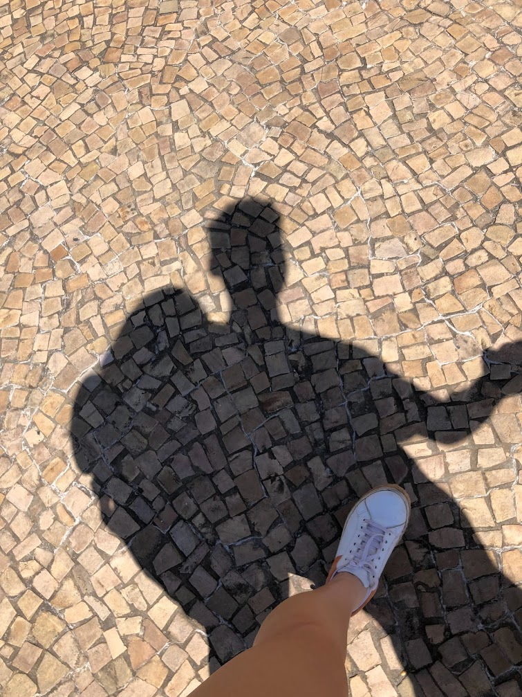

Quis fazer essa homenagem por todos os momentos que passamos. Espero compartilhar cada vez mais, para que um dia possamos fazer dessa uma página infinita.
Isso aqui nada mais é do que um compiladão de lembranças importantes para mim. Então vamos lá!
(PS: Obrigado por ter criado um álbum dedicado às nossas fotos. Você me salvando como sempre....)
Começamos com chamadas longas
Tinha dias que virávamos a noite conversando e aquilo significava muito para mim já que eu adoro ouvir suas histórias
Era muito doido pensar que eu viajaria para Marília para te conhecer, mas eu não conseguia me conter de alegria.
Você superou e muito as minhas expectativas
Me via jogando, tinha as melhores reações de todas e me inspirava mais que tudo!
Os olhos brilham me vendo tocar violão
E quando eu via seu sorriso abrindo? Eu derretia demaaais, como eu amo isso!
Primeiro encontro pessoal
Infelizmente não tirei foto daquele momento na facul...
Foi você quem me inspirou a ir atrás da faculdade e eu finalmente consegui sair da inércia, buscar meu sonho.
E lá estava você em carne e osso, tão linda que eu fiquei nervoso até de cumprimentar
Dali fizemos nosso tour e tivemos um resto do dia incrível hahahah
Você conheceu minha mãe no hotel e fomos almoçar no shopping
No outro dia tivemos um dos momentos mais significantes para mim: te levei para tomar café da manhã pela primeira vez
Salto para o hoje
Claro, ainda pretendo encher esse site com a nossa história, é só que eu queria muito relatar o começo porque foi tudo tão perfeito que é difícil acreditar que é tudo verdade.
Então hoje 12 de Julho de 2023...
8 meses (e uns dias) desse relacionamento incrível se passaram e você completa 22 anos.
A cada dia você mostra mais e mais competência e maturidade. Sempre vejo muita força, determinação e alegria vindos de você.
Sei que fiz a escolha perfeita, pois posso comprovar isso todos os dias vivendo ao seu lado.
Qualquer um que te usar como espelho vai se dar muito bem em qualquer coisa na vida!
Parabéns por mais um ano de vida, meu bem. Te amo!
Nosso guia do insta para rever mais momentos especiais